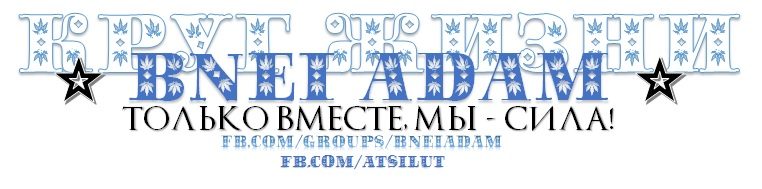

Регламент нашего Круга представлен в виде двух статей, одна из которых имеет открытую форму (опубликована на фейсбуке в группе Круг Жизни, под названием «Только Ты будешь жить вечно»1), а вторая скрытую, т.е. не публикуемую в интернете открыто2, которая приведена здесь.
2. Эта форма является той формой, которая будет у человечества в конце нелегкого Пути, который ему предстоит пройти уже осознанно, гораздо более осознанно, чем раньше, уже с «открытыми глазами». Но, все же, разница между тем, что имеется в обществе этого мира, и тем, что в нем будет, когда это произойдет, когда это будет достигнуто, Милостью Господа, нашими усилиями, разумеется, не без них (без них ничего не произойдет, поэтому мы здесь и собраны, поэтому мы и «избраны» — для того, чтобы служить Ему, именно ради этого) — нужно понимать, что та форма, которая есть (у общества этого мира), и та форма, которая будет, «прототип» которой, «корни» которой уже есть в нашем Круге — это две абсолютно разные, ни в чем не пересекающиеся, несовместимые, и неприводимые друг к другу формы.
3. Одна должна уступить главенствующее место другой в процессе эволюции человеческой цивилизации. Другая, может быть, останется, но она будет иметь явно вторичное значение для человечества. И, поэтому, мы не можем ориентироваться в нашей работе на те цели, те смыслы и ту реальность, которая уже есть в том обществе, которое у нас есть вокруг нас, поскольку это общество не имеет той формы, ради принятия которой мы, собственно, здесь и собрались. Ради выяснения, и ради осуществления проникновения, распространения которой, Творец, Свят Благословен Он, удостоил нас всего того, чем мы удостоены, и еще удостоит нас в будущем, Милостью Своей.
4. Поэтому, мы не действуем при разработке своего ближайшего, или не ближайшего, будущего, исходя из того понимания, и исходя из тех представлений, из сложившихся на данный момент практик, которые есть в обществе этого мира. Ни в чем, кроме как в том, как мы конкретно выполняем какую либо задачу, или движемся к достижению определенной Цели, которую сформулировали мы сами, исходя из нашего собственного понимания в Круге. Уже на этапе реализации, когда мы обдумываем то, как именно поставленная Цель может быть достигнута, тогда мы берем то, что есть в обществе этого мира, и соединяем одно с другим. Производим ряд выяснений, принимаем ряд практических решений о той форме, и о содержании того, как мы будем это делать практически в конкретное обозримое время. И только таким образом, мы учитываем (разумеется, учитываем, т.к. без этого никуда) ту реальность, которая существует в этом мире вне Круга.
Воззвание к друзьям-каббалистам